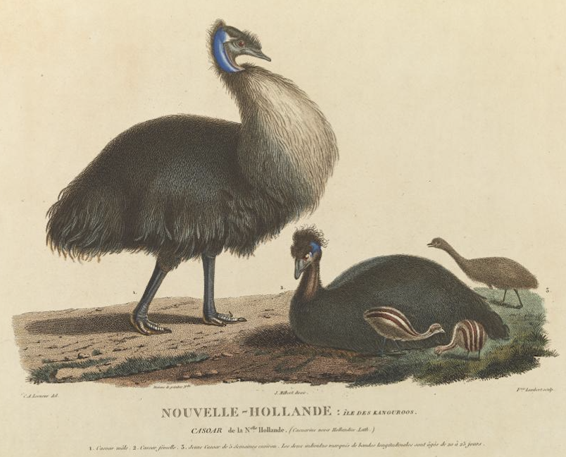
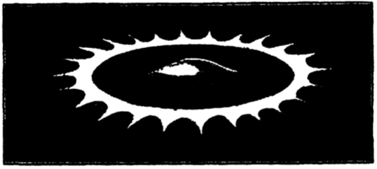
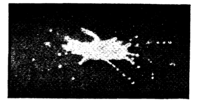

I.
Given its astonishing success, modern minds are mesmerised by science. So much so that various disciplines adopted certain mannerisms of science in order to make themselves more ‘scientific’. This is the intellectual sin Hayek and others called ‘scientism’.
Having come to understand why this was mostly a dead-end in the discipline of history, I’ve always been wary of scientism in economics and public policy. But having tried to solve problems in these areas on their own terms, I’m often taken aback that what I’ve come up with really is in the spirit of science. The difference is that, as Michael Polanyi put it, science is “a sphere of thought which can only live in pursuit of its own internal necessities”.[1]
If one has lived in pursuit of those internal necessities, and gained some insights, then Polanyi is suggesting that that process is itself science. Polanyi’s view was that the quest to systematise science – to police some demarcation between science and non-science – could never be brought off, a view that has been vindicated so far.
In the introductory section of this essay, I want to highlight two things that I’ve discovered are fundamental to good policy and practice in the field – that have direct counterparts in the natural sciences.
- First, I was once on a panel with Peter Doherty and talking about the importance of building ‘bottom-up’ knowledge in social programs (as I do!). Peter Doherty piped up and said “Science is bottom-up”. Quite.
- A second, but closely related idea is Richard Feynman’s. The “first principle” of science is that “you must not fool yourself and you are the easiest person to fool”.
Note that these are aspirations. And because they are difficult, science has developed methods that help scientists achieve them. I don’t think we’ve done that in public policy.
The next section provides a vignette from natural science which illustrates the two points above. The third, concluding section circles back to policy, broadly considered to mean the study of, and attempts to improve the human world. It looks at ways in which, policy practice will look different from the natural sciences if it is to “live in pursuit of its own internal necessities”.
II.
Lorraine Daston and Peter Galison’s book Objectivity provided the initial impetus for this essay. The book shows how scientific atlases – or visual representations of scientific knowledge – illustrate the transition between three different kinds of scientific knowing. It traces three ideal types of scientific knowing – Truth-in-nature, Objectivity, and Trained Judgement. Though the presence of one doesn’t always exclude the other, each ideal type was at its apogee around the middle of the 18th, 19th and 20th centuries respectively.
‘Truth-in-nature’ as the ideal type of truly scientific representation is illustrated in this 1798 passage from Goethe:
To depict it, the human mind must fix the empirically variable, exclude the accidental, eliminate the impure, unravel the tangled, discount the unknown.
This approach produced illustrations of nature, such as those sponsored by Lineaus, in which essences were captured. This involved blemishes or other peculiarities being abstracted from the representation.[2] This 1807 picture of “Cassowaries of Kangaroo Island” by Frangois Peron illustrates this point (OK they’re emus, but who wants to be picky?).

We tend to look at these images as ‘old-fashioned’ and kind of quaint and also scientifically naïve. That’s because, through the nineteenth century, a new set of scientific values displaced ‘truth-to-nature’. Here, as the authors put it:
What had been a supremely admirable aspiration for so long, the stripping away of the accidental to find the essential, became a scientific vice.
I’ve previously documented the way in which moral philosophy was transformed at the same time. The early 1800s saw the industrial revolution turn people into consumers and inputs to production. It also saw utilitarianism, and its thin dichotomy of ‘altruism’ and ‘egotism’, flatten the ‘thick’ heritage of the virtues. And likewise, the scientific extremes of ‘objectivity’ and ‘subjectivity’ emerged. As Daston and Galison write, “however many twists and turns the history of the terms objective and subjective took … they were always paired: there is no objectivity without subjectivity to suppress, and vice versa”.
At this point, scientific objectivity becomes a rigorous “self-abnegation” of the scientist. Here, the literal, mechanical truth of the camera and other machinery for representation – vapour trails and so on – become keys to objective truth. As Babbage put it, “One great advantage which we may derive from machinery is from the check which it affords against the inattention, the idleness, or the dishonesty of human agents.” This transition from ‘truth-in-nature’ to ‘objectivity’ is dramatically captured in the opening story in Objectivity which discusses the transition Arthur Worthington made. In the 1870s he presented idealised illustrations of fluid mechanics. 25 years later he presented far more idiosyncratic representations of actual fluid mechanical events from photographic images. (See images below).


To bring out the relevance of this, for my own thinking about policy, these 19th century figures are suggesting that a critical part of science is a division of labour between doing and knowing. This idea is already an important principle of all modern governments. They separate much of their data collection and dissemination from other governmental functions that depend on them. Thus, Treasury and the ABS are independent of each other. Likewise, the Bureau of Meteriology is independent of other agencies and protected from political direction. My own proposal for an Evaluator General seeks to operationalise this principle to strengthen the capacity of those in the field be honest with themselves about how well they’re performing. It does so by structurally separating knowing and doing.
So I took a particular interest in this passage from Daston and Galison:
At issue was not only objectivity but also ethics: all-too-human scientists now had to learn, as a matter of duty, to restrain themselves from imposing the projections … of their own unchecked will onto nature. To be resisted were the temptations of aesthetics, the lure of seductive theories, the desire to schematize, beautify, simplify —in short, the very ideals that had guided the creation of true-to-nature images. Wary of human mediation between nature and representation, researchers now turned to mechanically produced images. Where human self-discipline flagged, machines or humans acting as will-less machines would take over. Scientists enlisted self-registering instruments, cameras, wax molds, and a host of other devices in a near-fanatical effort to create images for atlases documenting birds, fossils, snowflakes, bacteria, human bodies, crystals, and flow ers—with the aim of freeing images from human interference. Not only would all schematization be avoided, one turn-of-the-century atlas author assured his readers, but the object of inquiry would also “stand truly before us; no human hand having touched it.”
The ethical duty of scientists requires a particular kind of humility which, as Iris Murdoch asserts, involves “selfless respect for reality”. Yet as she goes on to explain, humility is “one of the most difficult and central of all virtues”. It has a rare and paradoxical quality. As Murdoch assures us, humility is “not a peculiar habit of self-effacement, rather like having an inaudible voice”. In science the practitioner must be selfless, whilst simultaneously intensely active in crafting a vision. (Michael Polanyi is the only philosopher of science I know of whose thinking embarks from this point).
Be that as it may, this mid 19th century ‘objective’ view of science is not ultimately coherent. For the telos or aspiration of ‘objectivity’ is some ‘God’s eye view’ or a ‘view from nowhere’ neither of which humans have access to. This reveals it to be a ‘scientism’ within science as it were – an attempted shortcut to knowledge which ignores crucial difficulties. Sure enough a third stage emerges in Gaston and Galison’s story – “trained judgement”. This is illustrated in modern imaging – for instance medical imaging. This is very often diagnostic. And diagnosis requires someone – a trained ‘expert’ – to identify some point of significance – for instance the point at which the thing being imaged should be regarded as pathological.
III.
Consider the analogous process where we are trying for social knowledge and social helpfulness – as any program to improve people’s welfare aspires to. These are the challenges it must meet to succeed:
- It must deal with the difficulties of all scientific knowledge. Thus:
- It must respect realities other than the practitioners’. It must have enough respect and curiosity for it to become an object of selfless study.
- Yet this selflessness must be more than self-abnegation. For the scientist is building new knowledge not least by injecting their own insight and creativity.
- The knowledge practitioners seek is not objective knowledge ‘out there’ as it is in some sense in natural science. It is intersubjective knowledge. Knowledge of humans by other humans.
- When it comes time to act on the social world, practitioners’ knowledge and agency will often be important, but the agency of the intended beneficiaries of the program and others in their community usually matters far more.
As a matter of pure science, social action is vastly more complex and in that sense difficult. But its nature also gives us access to something which is not that much use in natural science. As Adam Smith argued, our natural sympathy for each other builds bridges of mutual understanding and support. So striving to do better – and I’m convinced we can do much much better – is not a waste of our time.
21st century social programs are arguably still stuck at the point natural science reached in the 18th or perhaps the 19th century. The structures we have in place now are almost perfectly designed to stymie progress. Why? Because progress must be built from the kind of radical, structured self-accountability that science must be built on. And bureaucracy is built on a parody of self-accountability which is accountability to others. For those who might be closing in on some new insight in the field, holding them accountable to their superiors in the hierarchy who are further from the field will hold them accountable for the wrong things. And so accountability collapses into role play.
I recently wrote about public sector evaluation moving a certain well-known joke from a bit part to the centre of the analysis. Lord Acton suggested that rowing was the perfect preparation for public life because it required one to move in one direction while facing in the other. A crucial reason that we’ve made so little progress is that in a thousand ways, large and small, the actors in the system face in one direction – with their mission statements, corporate values, strategic plans, KPIs, evaluation strategies and all the rest of it – while moving in the other – satisfying institutional imperatives and ‘accountability theatre’.
Professionalism is the only methodology I’m aware of that provides some resistance to the tyrannies of managerialism. It does so by giving professionals fiduciary duties to their clients alongside duties to their managers.[3] I have already quoted, Michael Polanyi "Rights and Duties of Science”. With the things I've discussed in this essay in my mind, when I first encountered the passage below from that essay, I thought of not of science but of all those government social programs that go through the motions and never really work:
The State cannot maintain and augment the sphere of thought which can only live in pursuit of its own internal necessities unless it refrains from all attempts to dominate it, and further undertakes to protect all men and women who would devote themselves to the service of thought, from interference by their fellow citizens, private or official whether prompted by prejudice or guided by enlightened plans. The position of science in society is thus seen to be merely a special feature of the position of thought in society.[4]
[1] Polanyi, Michael, 1939. “The rights and duties of science”, in Polanyi, Michael, 2017 (1997) Society, economics, and philosophy: Selected papers edited by R. T. Allen, Routledge, London and New York, p. 68.
[2] It occurs to me that this may help explain why those early illustrations of Australian animals make them look so European. Though the illustrators were seeking to illustrate what was ‘new’ about these animals, and what was unique to their species, they were also instinctively discounting ‘idiosyncrasies’.
[3] Yet, as I argued here, professionals were “freighted … with the baggage of the governing class – a particular problem where users were from another class or ethnicity”. Further their class bias and their autonomy also meant that they could ignore evidence as for instance doctors did, delaying the speed with which hand washing was used to reduce infection in medicine.
[4] Polanyi, Michael. 1939. "Rights and Duties of Science." The Manchester School of Economic and Social Studies X:175-193, pp. 182-83.